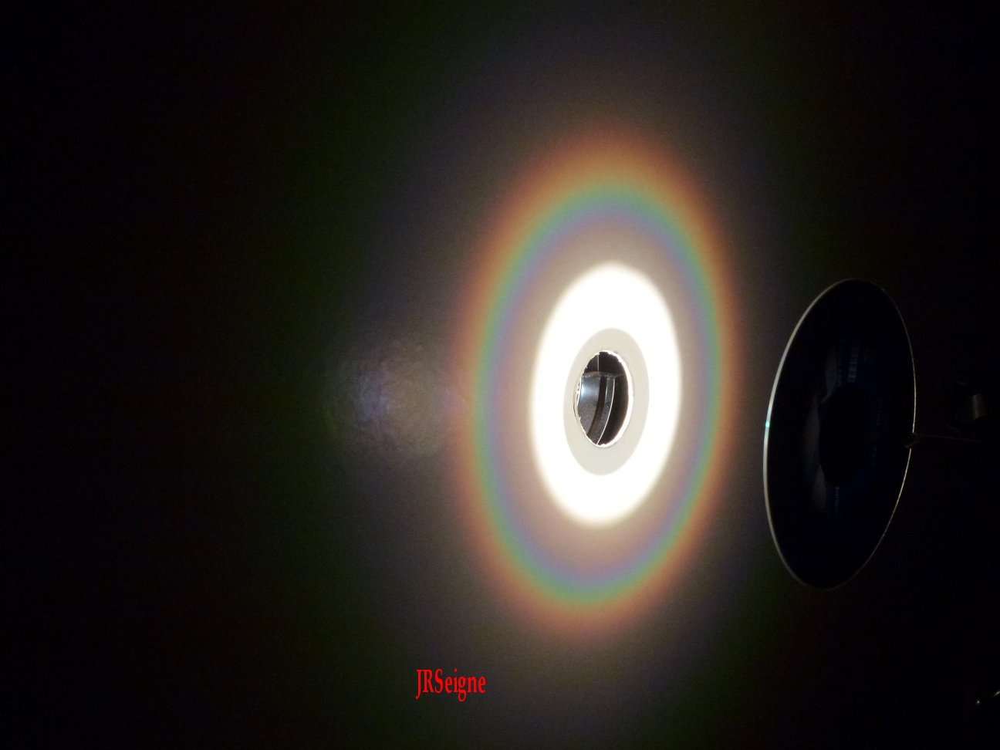
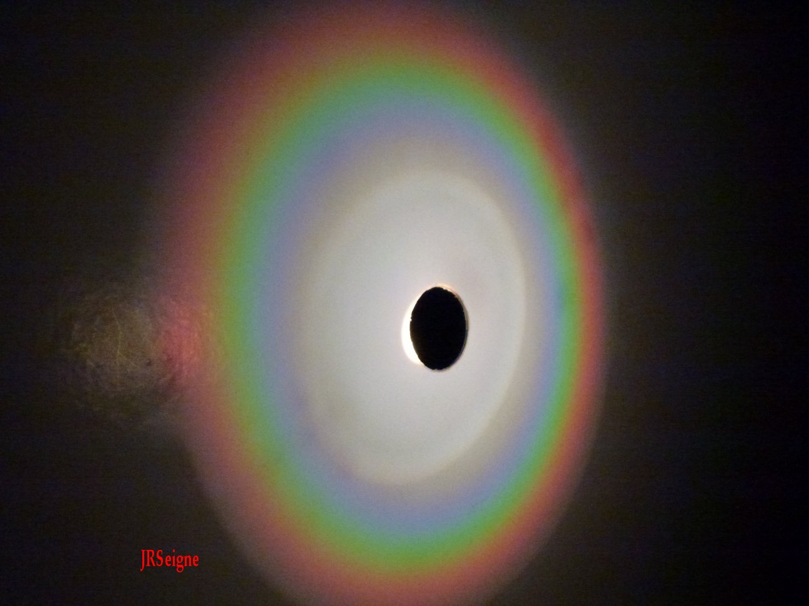
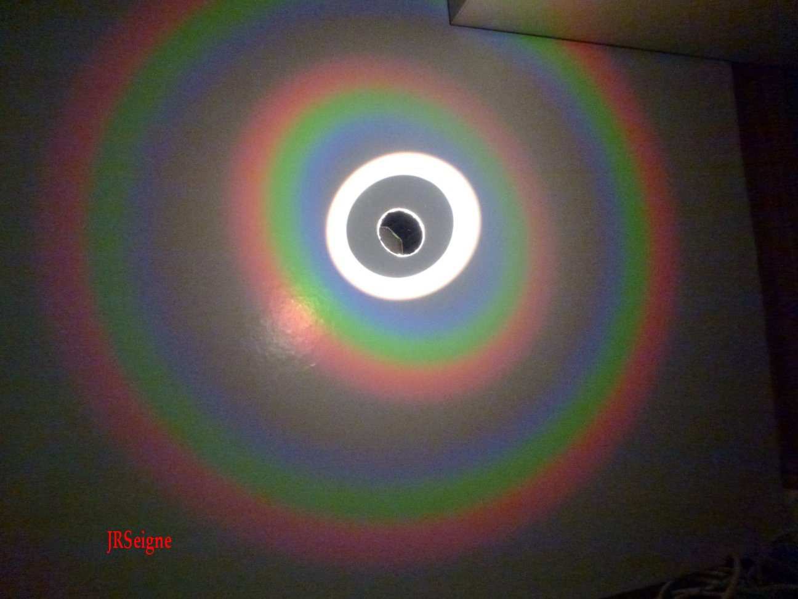
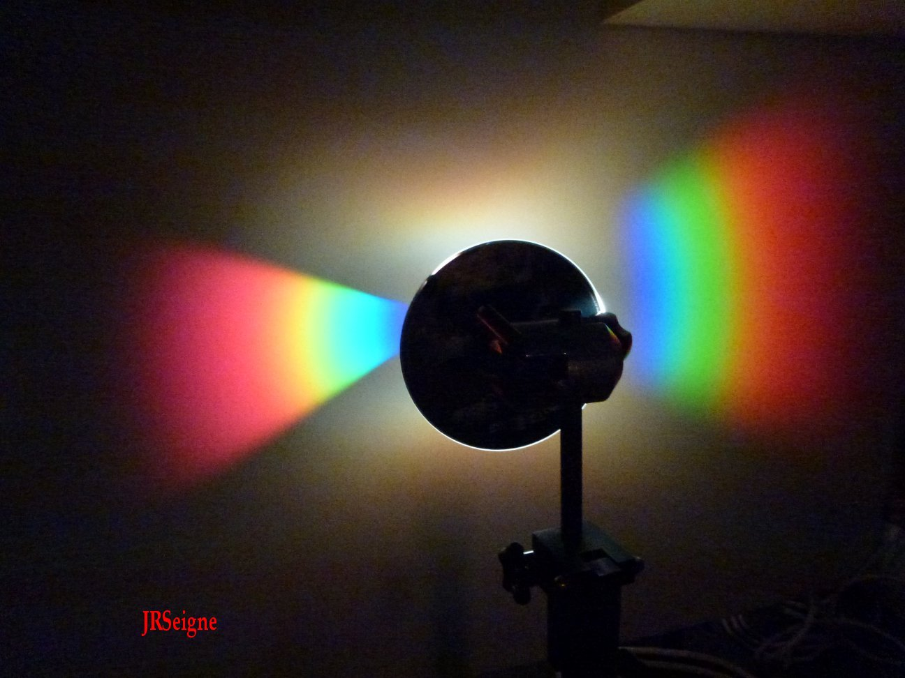
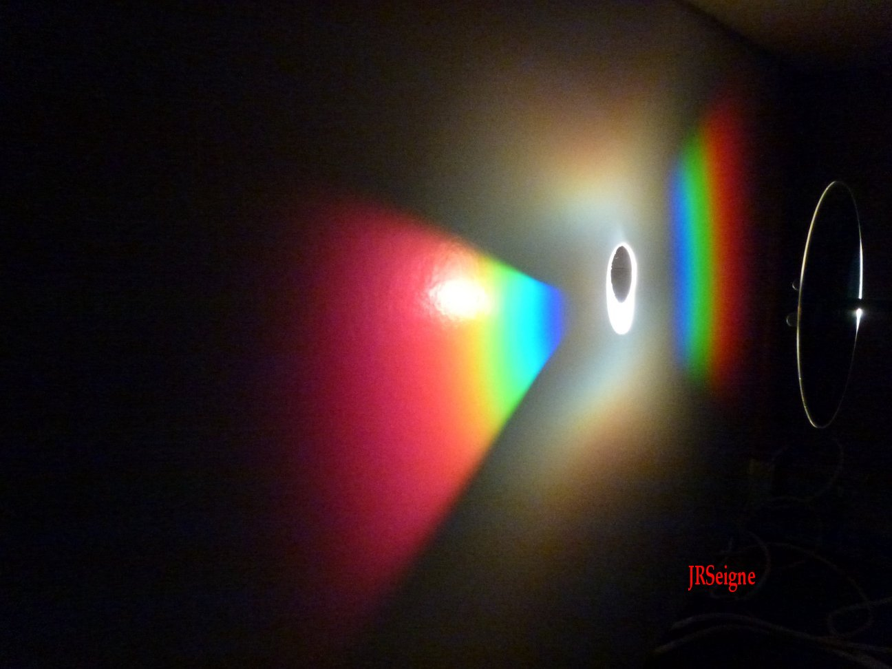

phpMyVisites | Open source web analytics

Sciences Physiques en MP*, Lycée Clemenceau Nantes |
|  |
On peut voir sur ces deux photographies l'image de diffraction d'un faisceau de lumière blanche par la face porteuse de l'information d'un CDRom. Le faisceau de lumière blanche est envoyé à travers un trou circulaire réalisé dans l'écran d'observation. La face utile du CDRom (qu'on devine sur la photographie de gauche) renvoie alors la lumière vers l'écran en la diffractant. On peut voir un disque central de lumière blanche correspondant à l'ordre 0 et un anneau formant le spectre de la lumière blanche correspondant à l'ordre 1. La figure observée résulte à la fois des phénomènes de diffraction et d'interférences. |  |
| Énoncés | DM1 | DM2 |
DM3 | DM4 | DM5 | DM6 | DM7 | DM8 |
| Solutions | DM1sol | DM2sol | DM3sol | DM4sol | DM5sol | DM6sol | DM7sol | DM8sol |
| Sur cette
photographie, on peut toujours voir
l'ordre 0 et l'ordre 1 mais par rapport aux photographies ci-dessus, on
observe un anneau supplémentaire représentant le spectre de la lumière
blanche qui correspond à l'ordre 2. Sur le CDRom, l'information est
gravée le long d'un spirale qui démarre près du centre et progresse
vers le bord de façon régulière. Le pas de la spirale correspond sur le
plan physique au pas d'un réseau. Sur le CDRom, ce pas est de l'ordre
1,6 microns. Cette longueur qui se rapproche des valeurs des longueurs
de la lumières blanche (0,5 microns) favorise l'observation aisée de
telles figures. |
 |
| Énoncés | DL1 | DL2 | DL3 | DL4 | DL5 | DL6 | DL7 | DL8 |
| Solutions | DL1sol | DL2sol | DL3sol | DL4sol | DL5sol | DL6sol | DL7sol | DL8sol |
|  |
Dans les photographies précédentes, on pouvait observer l'image de diffraction- interférences dans le cas où l'éclairage du CDRom était centré. Ici, au contraire on peut observer la figure obtenue lorsqu'on éclaire un secteur du CDRom sur un côté. On peut toujours voir les ordres 0 et 1 mais leur forme ne constitue plus un disque ou un anneau. Pour approfondir l'étude de ce type de diffraction de la lumière blanche, on pourra utilement se reporter à l'article du BUP n°934 de mai 2011 intitulé Etude comparée d'un CD, d'un DVD et d'un Blu-ray écrit par M. Renaud Carpentier et M. Thierry Guillot du lycée Victor Hugo de Besançon. |  |
| Énoncés | DS1 | DS2 | DS3 | DS4 | DS5 | DS6a | DS6b | DS7 | DS8 |
| Solutions | DS1sol | DS2sol | DS3sol | DS4sol | DS5sol |
DS6asol | DS6bsol | DS7sol | DS8sol |
| Cours | Diaporamas | TD | TP | Oral | Etudiants MP* | Etudes documentaires |
Anciens | Accueil |